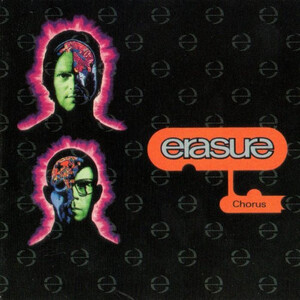

Erasure - Chorus
Another entry in the British synth-pop duo book, Erasure had success through the heights of synth-pop in the 80s, but a move to a brighter, analogue-synthesised sound in the early 90s lent them further years of hit singles. Chorus began that shift, when keyboardist Vince Clarke decided to quit using MIDI due to its minute flaws in timing which he couldn't accept, and so instead he used a Roland MC-4 Microcomposer; the precursor to the modern music tracker. Unlike MIDI, it was limited to only four channels of output, which all went to Clarke's 80s analogue synths, which would later be paraded around on stage in Clarke's mini-synth-tank during the supporting tour for this album (seriously, look up "Erasure synth tank"). The other problem with the MC-4 is that it could only send one note at a time, so chords were suddenly a lot harder to create. This in turn created the signature bleepy-bloopy sound of the album, strongly based on melodies rather than chords. In doing this, the band managed to, like the Pet Shop Boys with Behaviour, escape the samey-sound that digital synthesis was at risk of creating, and carved out four singles for the album, plus some extra bits. So, let's look at their B-sides!
The first two singles, the title track and "Love to Hate You" (both my personal favourite picks off the record), featured two B-sides each. The third single however, the calmer "Am I Right?", introduces us to a unique style that Erasure carries; the EP. The best way I can describe the EP as a format is like a fish you've beaten against the post a few times, but which despite that and the lack of water, seems to be incapable of dying and is just getting bloodier as time goes on. Okay, that's a horrible way of describing it, but still. EPs died as a proper format in the late 60s; arguably the most famous EP, the Beatles' Magical Mystery Tour (1967), was unusual even for the time; EMI stopped regularly releasing EPs the following year. EPs have since remained a strange limbo of not being popular enough to deserve their own chart but popular enough that we don't view them as relics like 8-tracks and shellac discs. People still release EPs today; they're usually made because whoever made it didn't have the budget nor time to make an album, and are usually forgotten about as time goes on (unlike albums). But Erasure seem to have a fondness for the format, with a number of official EPs - consisting usually of new music - being released by the group over the years, the first being Crackers International in 1988, a quasi-Christmas EP which managed to sneak into the singles chart, but was held off the top spot by that couple off Neighbours. "Am I Right?" was the group's second EP release (well… technically it was released as a single originally, but featured four tracks like an EP, and it was only when it was re-released shortly afterwards with remixed versions of each song that it was called an EP), and featured three new tracks. The remixed version of the EP/single featured one Erasure-made mix and a new track: "B3". The fourth and final single from the album, "Breath of Life", also featured a few Erasure-made mixes, but no original B-sides.
However, it was only after the album and its singles were released that Erasure made a properly successful release. You see, if there's anything that I've learned from my years in the synth-pop and disco world, it's that the music which straight critics say is worthless, meaningless tripe is the kind of music gay critics go wild for. And chief among those kitschy pop-till-you-drop artists is ABBA. Now a staple of popular music, ABBA was once seen as lame pop music for people who just wanted something to dance to, as opposed to sitting down and thinking about, and so was absolutely huge in the gay scene of the 80s. Erasure, being one of the gayest acts since the Village People, took pride in their love of ABBA; for example their first tour featured a cover of "Gimme! Gimme! Gimme!". And so in 1992, the two decided to present their appreciation for the group (and promote their new tour, which featured ABBA songs) in the form of an EP featuring four ABBA covers in their new style, titled Abba-esque. Led by a bouncy techno-pop version of "Take a Chance on Me" (the music video for which being a tribute to the original with Erasure in drag dressed as ABBA members Agnetha and Frida), the EP was an unexpected smash, finally bringing Erasure to the top of the charts after five years and two near-misses, with the EP holding the top spot for five weeks. To this day, it remains one of only four EPs to ever reach the top spot on the British singles chart (see, there was a reason for that rant earlier!), the longest an EP has held the spot for, and even better, one of the best-selling EPs in British history. And even better for the band the two were clearly fanatic about; the increased interest in ABBA happened to align quite nicely with the fact that their label was planning to release a new greatest hits album of their songs that year. Soon, this quaint little compilation called ABBA Gold was one of the best-selling albums in history, with its biggest performance being in Erasure's home of the UK, where it is bested in sales only by Queen's Greatest Hits. And while I can't develop a completely conclusive argument that Erasure were part of this success, you'd imagine their EP must have helped somewhat.
Oh, and one last thing; like the Pet Shop Boys, Erasure followed their change in sound with a chronologically-ordered compilation album of all their singles, with some new stuff on the end. Well, it wasn't entirely "new", the one new track was a remix of their first single which didn't sell well, but still it definitely sounded new, and just about wiggled its way into the UK top 10. Right, enough long-winded stories about music history, let's get to the tracklist!
CD 2
| No. | Title | Original release | Length |
|---|---|---|---|
| 1 | Over the Rainbow | "Chorus" single, 1991 | 3:41 |
| 2 | Snappy | 5:17 | |
| 3 | Vitamin C | "Love to Hate You" single, 1991 | 3:32 |
| 4 | La La La | 4:10 | |
| 5 | Carry on Clangers | "Am I Right?" single/EP, 1991 | 4:02 |
| 6 | Let It Flow | 4:23 | |
| 7 | Waiting for Sex | 4:06 | |
| 8 | B3 | 4:14 | |
| 9 | Lay All Your Love on Me | Abba-esque EP, 1992 | 4:45 |
| 10 | SOS | 3:49 | |
| 11 | Take a Chance on Me | 3:43 | |
| 12 | Voulez-Vous | 5:35 | |
| 13 | Who Needs Love (Like That) [Hamburg Mix] | Pop! The First 20 Hits compilation, 1992 | 3:03 |
| 14 | Snappy (12" Remix) | "Chorus" single, 1991 | 5:33 |
| 15 | Perfect Stranger (Acoustic Version) | Am I Right? EP, 1991 | 2:10 |
| 16 | Breath of Life (Single Remix) | "Breath of Life" single, 1992 | 3:03 |
| 17 | Breath of Life (Swiss Mix) | 4:36 | |
| 18 | Breath of Life (Elixir Mix) | 6:26 | |
| 76:37 |

Released: 14 October 1991
Length: 41:29
Genre: Synth-pop
Personal rating: 9.5 / 10
Favourite song: "Love to Hate You"
- "Chorus" – 4:17
- "Waiting for the Day" – 4:29
- "Joan" – 4:48
- "Breath of Life" – 3:39
- "Am I Right?" – 4:19
- "Love to Hate You" – 3:32
- "Turns the Love to Anger" – 4:02
- "Siren Song" – 5:33
- "Perfect Stranger" – 4:55
- "Home" – 3:50